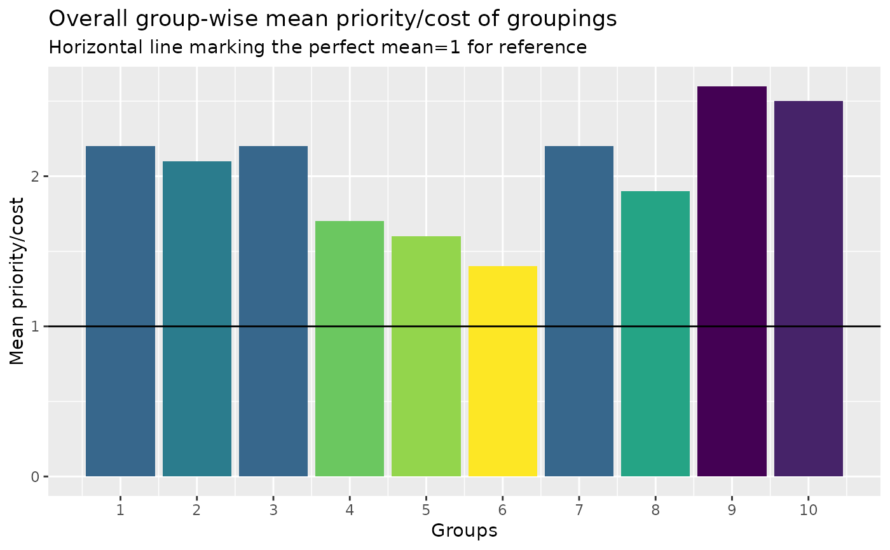

Assessment performance overview
grouping_plot.RdThe function plots costs of grouping for each subject in every group. Performance measures printed are fill: fraction of filling relative to the capacity specified; mean: mean priority/cost in group; n: number of subjects in the group.
Usage
grouping_plot(
data,
columns = 4,
overall = FALSE,
viridis.option = "D",
viridis.direction = -1
)Arguments
- data
A "prioritized_groups_list" class list from 'prioritized_grouping()'
- columns
number of columns in plot. Default=4.
- overall
logical to only print overall groups mean priority/cost
- viridis.option
option value passed on to 'viridisLite::viridis'. Default="D".
- viridis.direction
direction value passed on to 'viridisLite::viridis'. Default=-1.
Examples
#read.csv(here::here("data/prioritized_sample.csv")) |>
# prioritized_grouping(cap_classes = sample(4:12, 17, TRUE)) |>
# grouping_plot()
data.frame(id=paste0("id",1:100),
matrix(replicate(100,sample(c(1:5,rep(NA,15)),10)),ncol=10,byrow = TRUE)) |>
prioritized_grouping() |> grouping_plot(overall=TRUE)
#> Loading required namespace: ROI
#> Loading required namespace: ROI.plugin.symphony
